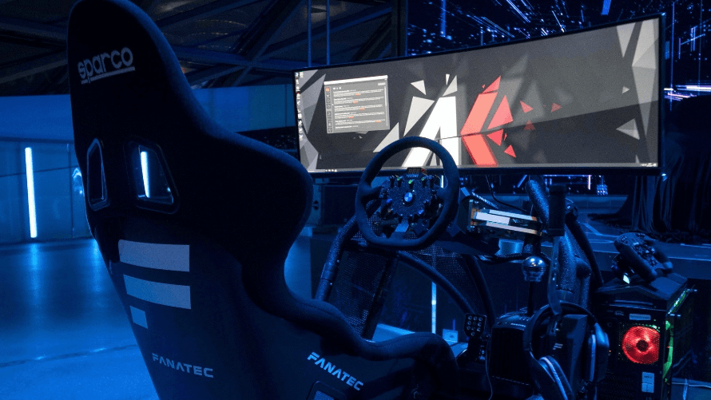

Mein Name ist Tim Geywitz. Ich bin 16 Jahre alt, wohne in Weilheim und besuche die Max Eyth Schule in Kirchheim. Meine Hobbys sind Motorrad fahren, Sim Racing und Android Roms.
Schule
Ich besuche die Max Eyth Schule. Ich lerne dort viele interessante Dinge und habe tolle Lehrer. (Besonders Herr Brusda).
Hobbies
Motorrad fahren
Mein Motorrad ist eine KSR TW 125. Ich habe bisher den Auspuff modifiziert und plane noch einen anderen Kennzeichenhalter anzubauen und noch ein paar andere Kleinteile. Es macht sehr viel Spaß damit zu fahren. Ich freue mich sehr auf den Tag, an dem ich meinen A2-Führerschein machen kann.
Sim Racing

Sim Racing ist eine Form des virtuellen Motorsports, bei dem ich die Strecke mit einem virtuellen Fahrzeug befahre. Es gibt viele unterschiedliche Sim Racing-Plattformen, wie z.B. iRacing, BeamNG.drive und Assetto Corsa. Ich verbringe viel Zeit damit, meine Fähigkeiten zu verbessern und an Rennen teilzunehmen.
Android Roms
Android Roms sind modifizierte Versionen des Android-Betriebssystems. Ich interessiere mich sehr für die Entwicklung von Android Roms und habe schon an einigen Projekten mitgewirkt. Sie bieten oft erweiterte Funktionen, wie z.B. eine angepasste Benutzeroberfläche, zusätzliche Sicherheitseinstellungen oder die Möglichkeit, das Betriebssystem an die eigenen Bedürfnisse anzupassen.